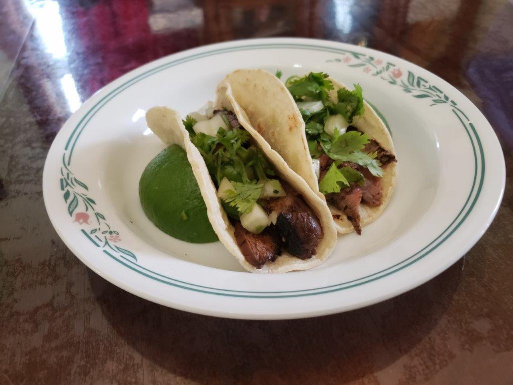

Carne Asada

Ingredients:
- 2 lb Skirt steak or Flank steak
- 1 Jalapeño, minced
- 4 cloves Garlic, minced
- 1/2 bunch Cilantro, chopped
- 1/3 cup Olive oil
- 1/4 cup Orange juice
- 2 tbsp Lime juice
- 2 tbsp White wine vinegar
- 2 tsp Chili powder
- 1 tsp Oregano
- 1 tsp Cumin
- 1 tsp Ancho chili powder
- 1 tsp Salt
- 1/4 tsp Black pepper
Instructions:
- In a large bowl, combine all ingredients except the steak. Place the steak into a gallon ziplock bag and pour the marinade mixture over it. Seal the bag and massage the marinade into the steak inside the bag. Let marinate overnight.
- Remove the steak from the marinade and pat dry. Coat with a small amount of olive oil and season with salt and pepper to taste.
- Grill the steak on medium-high heat for 4-12 minutes on each side, depending on the thickness of the steak. It is done when the internal temperature is 140 degrees Fahrenheit.
- Remove the steak from the grill and let rest for 5-12 minutes depending on the thickness. Cut into thin slices against the grain. Serve in tacos with cilantro and diced onions, or any preffered way.